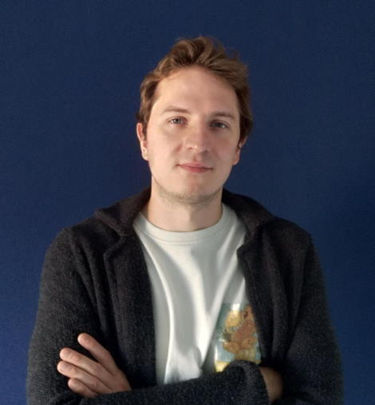

Вода
Море
Море + песок
Космос
Растение
Буквы
Код
Командная строка
Andrey Sergeenkov
Independent researcher
Email
Telegram
LinkedIn
X
RSS

🏆 Winner of the 2026 ACJR
Best Crypto Op-Ed
Award
I take on freelance research projects.
Send me what you're working on and I'll come back in 1–2 days with a proposal.
My Independent Research
How Many Traders Are Profitable on Polymarket
Address Poisoning Losses Surged 13x After Fusaka
Curators of TheDAO's $220M Set a Precedent
Record-High Activity Caused by Address Poisoning
The Case for a Loss-Based Polymarket Airdrop